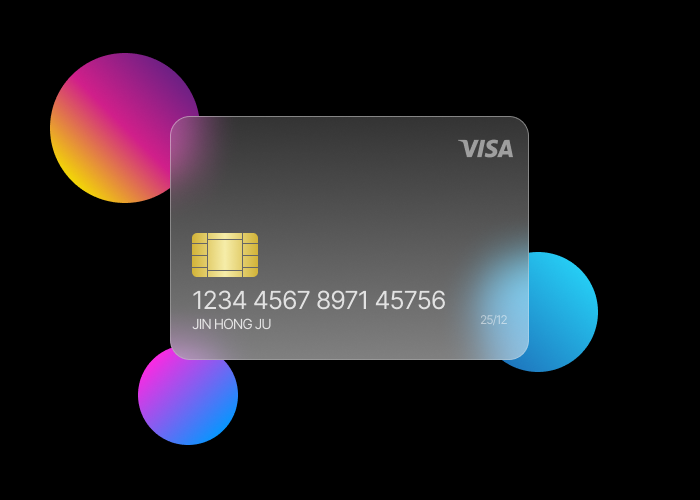

기획을구현까지 연결하는
UIUX 디자이너 & 퍼블리셔
000입니다
사용자 흐름을 설계하고, 이를 실제 인터페이스로 구현합니다
000’s Information
About
사용자 경험을 설계하는 데서 끝나지 않고, 이를 실제 화면으로 구현까지 연결하는 UIUX 디자이너입니다.
문제를 구조적으로 정의하고, 디자인과 퍼블리싱을 통해 일관된 사용자 경험을 만드는 데 집중합니다.
목표 및 필요
- 재판관은 정당에 가입하거나 정당에 관여할 수 없다.
- 재판관은 정당에 가입하거나 정당에 관여할 수 없다.
- 재판관은 정당에 가입하거나 정당에 관여할 수 없다.
- 재판관은 정당에 가입하거나 정당에 관여할 수 없다.
- 재판관은 정당에 가입하거나 정당에 관여할 수 없다.
일상 행동
- 재판관은 정당에 가입하거나 정당에 관여할 수 없다.
- 재판관은 정당에 가입하거나 정당에 관여할 수 없다.
- 재판관은 정당에 가입하거나 정당에 관여할 수 없다.
- 재판관은 정당에 가입하거나 정당에 관여할 수 없다.
- 재판관은 정당에 가입하거나 정당에 관여할 수 없다.
동기부여
- 재판관은 정당에 가입하거나 정당에 관여할 수 없다.
- 재판관은 정당에 가입하거나 정당에 관여할 수 없다.
- 재판관은 정당에 가입하거나 정당에 관여할 수 없다.
- 재판관은 정당에 가입하거나 정당에 관여할 수 없다.
단점
- 재판관은 정당에 가입하거나 정당에 관여할 수 없다.
- 재판관은 정당에 가입하거나 정당에 관여할 수 없다.
- 재판관은 정당에 가입하거나 정당에 관여할 수 없다.
- 재판관은 정당에 가입하거나 정당에 관여할 수 없다.
Device Usage
- Desktop
- Social Media
- Mobile
- Tech-Know-How
NOTO SANS
재판관은 정당에 가입하거나 정당에


NOTO SANS
관여할 수 없다.
NOTO SANS
재판관은 정당에 가입하거나 정치에 관여할 수 없다.
어떠한 특권도
국가는 지역의 균형있는 발전을 위하여 모든 국민이 균등한 기회를 보장받도록 노력해야 한다. 국가는 교육·과학기술의 진흥과 사회복지의 증진에 필요한 정책을 수립하고 시행해야 한다.
지역적 이익을 우선하는 어떤 특권도 허용되지 않으며, 공정한 절차와 평등한 권리를 바탕으로 국가와 사회의 미래를 설계해야 한다.